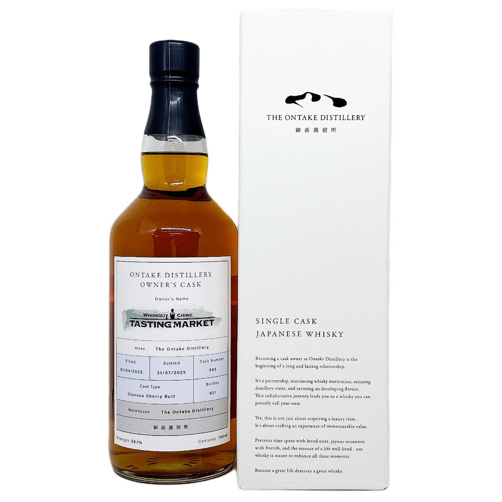
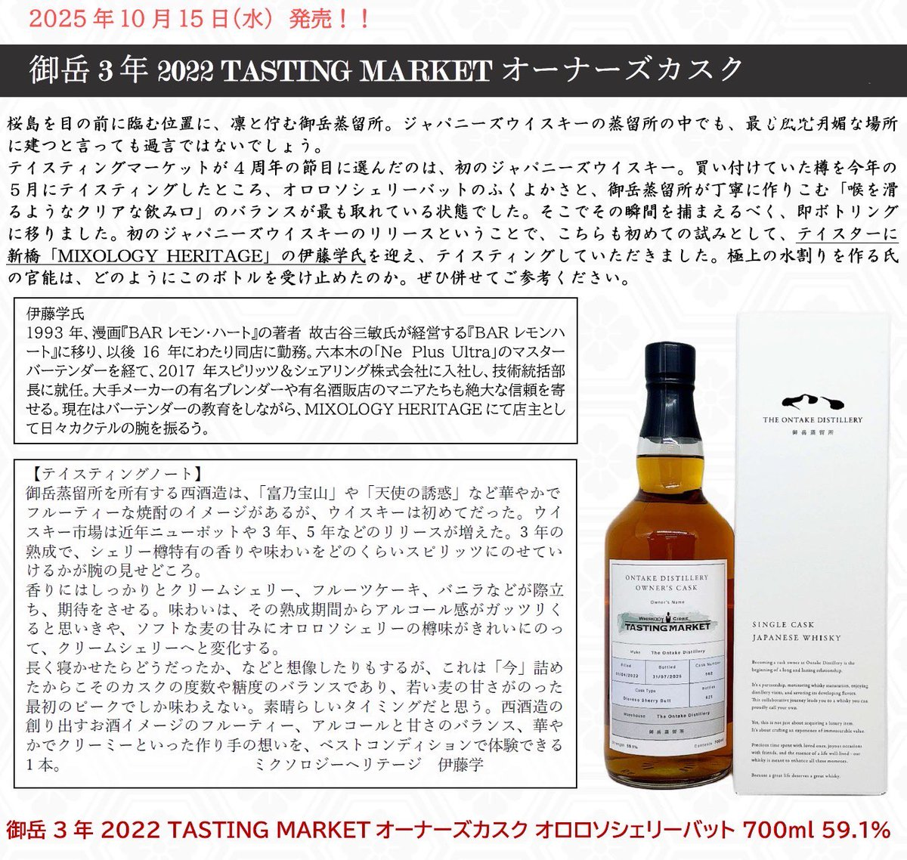

bisco
@bisco91395061
RT @Tasting_Market: 4周年の感謝の気持ちをこめて
🎁フォロー＆いいね＆リポストで当たる🎁
各所で話題のPB【御岳3年 2022 for TASTING MARKET】を抽選でな、な、なんと15名の方になんとちょっと早いクリスマスプレゼントをしちゃいます✨…


TASTING MARKET（テイスティング マーケット）
@Tasting_Market
4周年の感謝の気持ちをこめて
🎁フォロー＆いいね＆リポストで当たる🎁
各所で話題のPB【御岳3年 2022 for TASTING MARKET】を抽選でな、な、なんと15名の方になんとちょっと早いクリスマスプレゼントをしちゃいます✨
ぜひ奮ってご応募下さい！！
応募締切(11月30日23時)
詳細はコメント欄へ続く https://t.co/cWaCtuEQsf